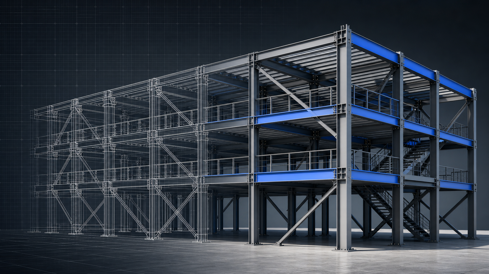

01

STRUCTURAL MECHANICS · FALL 2025 + WINTER 2026
Structural Mechanics
Six experiments investigating stress concentration, compression, truss forces, beam deflection, flexural stress, and torsion through AutoCAD drawings, hand calculations, Excel analysis, and physical testing.
Project Details